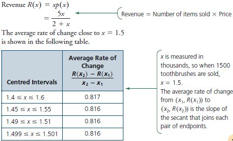
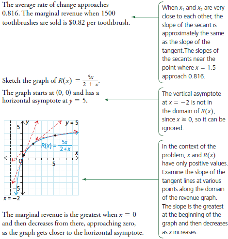
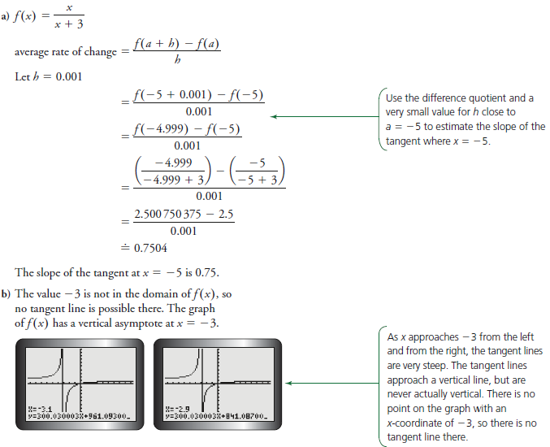

|
The instantaneous rate of change at a point on a revenue function is called the marginal revenue. It is a measure of the estimated additional revenue from selling one more item. For example, the demand equation for a toothbrush is p(x) = , where x is the number of toothbrushes sold, in thousands, and p is the price, in dollars. |
Example:
Determine the marginal revenue when 1500 toothbrushes are sold and when it is the greatest and the least.


Example:
a) Estimate the slope of the tangent to the graph of f(x) = , at the point where x = -5.
b) Why can there not be a tangent line where x = -3?
